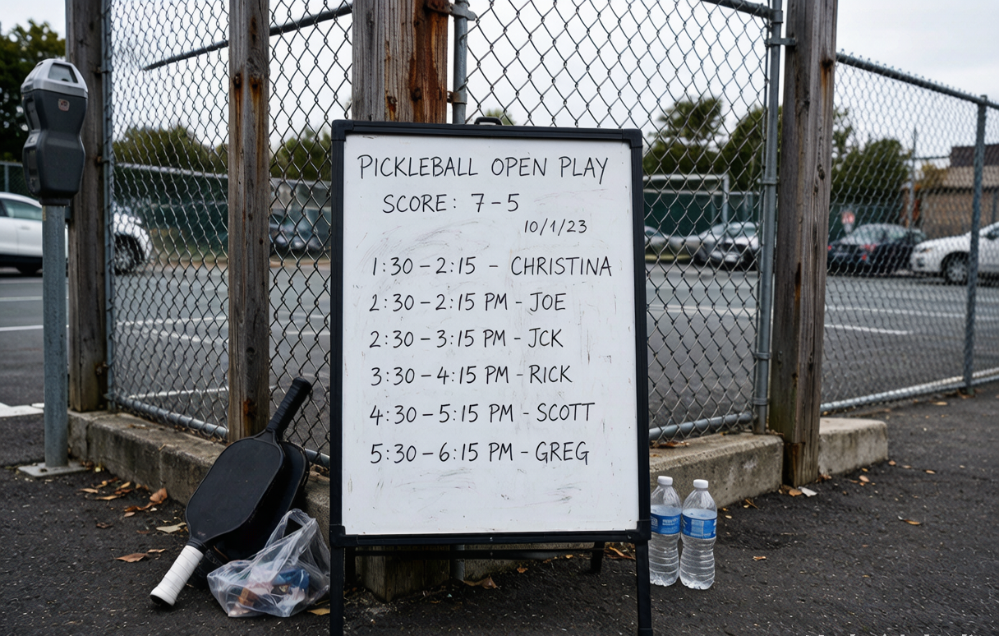

Pickleball terms: a plain-English glossary for beginners

Walk onto a pickleball court and the chatter sounds like a different language. "Drop it in the kitchen," someone yells. "That's a side out," says another. You don't need to memorize the full USA Pickleball rulebook to keep up, but you do need the core words. This glossary covers the terms you will hear in your first month of play in the US.
The court and its zones
Kitchen (non-volley zone): The 7-foot strip on each side of the net. You can stand there, but you cannot hit the ball out of the air while you are in it. The line counts as part of the kitchen.
Non-volley zone: The official name for the kitchen. Same thing, fancier wording.
Baseline: The back line of the court, 22 feet from the net. You serve from behind it.
Transition zone: The space between the baseline and the kitchen line, sometimes called no-man's land. Beginners get stuck here; better players move through it fast.
Centerline: The line splitting each service box into left (odd) and right (even) halves.
Cross-court: The diagonal opposite side of the net from where you stand.
The shots
Dink: A soft shot hit just over the net that lands in the opponent's kitchen. It's a control shot, not a weak one.
Third-shot drop: The third shot of a rally (after the serve and the return), a soft shot meant to land in the opponent's kitchen so your team can move up to the net. Many coaches call it the most important shot in doubles.
Drop shot: Any soft shot designed to land short in the kitchen and pull opponents forward.
Drive: A hard, flat shot hit with pace, usually aimed at the opponent's feet or body.
Lob: A high, arcing shot sent over the opponents' heads toward the baseline.
Volley: Hitting the ball out of the air before it bounces. Only legal outside the kitchen.
Overhead (smash): A hard downward shot hit above your head, usually to finish a point off a high lob.
Reset: A soft, controlled shot used to slow a fast rally and start a dinking exchange over.
Ace: A serve the receiver fails to return, scoring a direct point.
The rules language
Rally: The back-and-forth play from the serve until a fault ends it.
Fault: Any rule violation that ends the rally.
Side out: When the serving team loses the rally and the serve goes to the other side.
Double bounce rule (two-bounce rule): After the serve, the ball must bounce once on each side before anyone can volley. This is the rule that defines the sport.
Let: A serve that clips the net but still lands in the correct box. Under current USA Pickleball rules, a let is played as a live ball and is not replayed. That changed in 2025.
Dead ball: A ball that is out of play after a fault, before the next serve.
Pickled: Losing a game 11-0.
Doubles strategy terms
Poach: When one partner crosses over to hit a ball meant for the other.
Stacking: A positioning setup where partners line up on the same side before the serve to keep a stronger side in play, then shift after the ball is struck.
Erne: An advanced volley hit from outside the court near the net post, stepping around the kitchen instead of through it.
Shake and bake: A doubles play where one partner drives the third shot while the other crashes the net.
One more word on gear
Paddle: The solid-faced racket you hit with, made from composite, graphite, or wood. "Paddle" is the correct term; calling it a racket is a tell that you're new.
You don't need all of this on day one. Learn kitchen, dink, volley, and fault, and you can follow most games. The rest shows up naturally as you play.
Your next step
The words make more sense once you are holding a paddle. Our matcher scores 20-plus paddles against your level, style, and budget in about 30 seconds, or you can read the full guide to choosing your first paddle first.
If you want the rules behind the words, start with how to play pickleball. And when the score call sounds like gibberish, our scoring explainer breaks it down.
getrallypick may earn a commission from partner links. It never changes our recommendations. See our disclosure.